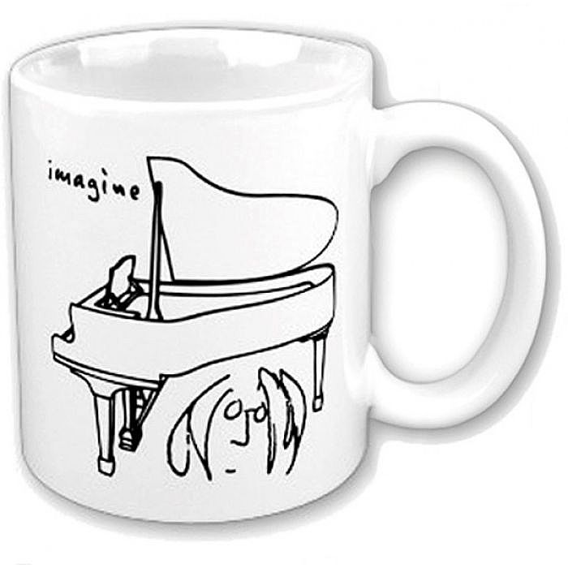

#IMAGINE
Performance & Ritual in an Age of Global Insecurity
Paper presented at the Cultural Typhoon conference, Tokyo University of the Arts (GEIDAI), Tokyo, Japan, 2 July 2016.
Dreamer
You stupid little dreamer
So now you put your head in your hands, oh no!
I said ‘Far out — what a day, a year, a laugh it is!’
You know
Well you know you had it comin’ to you
Now there’s not a lot I can do.
You Say You Want A Revolution?
 In November 1989, after hearing reports of the impending fall of the Berlin Wall on his radio in Paris, the Russian cello virtuoso Slava Rostropovich flew to Berlin to perform an impromptu solo performance of Bach’s second Cello Suite at Checkpoint Charlie (Cello Suite No.2, BWV 1008).
In November 1989, after hearing reports of the impending fall of the Berlin Wall on his radio in Paris, the Russian cello virtuoso Slava Rostropovich flew to Berlin to perform an impromptu solo performance of Bach’s second Cello Suite at Checkpoint Charlie (Cello Suite No.2, BWV 1008).
 A year earlier, only a few hundred miles from Berlin in Prague, a different wall had been causing concern to the Communist regime in Czechoslovakia: the John Lennon wall, as it had become known, had since the early 80s become covered with Beatles and Lennon-related graffiti and in recent years had become a focus for messages of protest among the nation’s increasingly dissatisfied youth. Still standing to this day, the Wall was painted white in 2007 by (no-doubt Fluxus-minded) art activists, leaving only the text “Wall Is Over” (later corrected to “War Is Over”).
A year earlier, only a few hundred miles from Berlin in Prague, a different wall had been causing concern to the Communist regime in Czechoslovakia: the John Lennon wall, as it had become known, had since the early 80s become covered with Beatles and Lennon-related graffiti and in recent years had become a focus for messages of protest among the nation’s increasingly dissatisfied youth. Still standing to this day, the Wall was painted white in 2007 by (no-doubt Fluxus-minded) art activists, leaving only the text “Wall Is Over” (later corrected to “War Is Over”).
{kind=link}
All of which is to say that Davide Martello’s performance of a wordless version of John Lennon’s song “Imagine” on a grand piano outside the Bataclan nightclub in Paris on the morning of Saturday 14 November 2015, where the previous night armed gunmen had shot dead 90 people, was not without historical precedent.
Prior to the Bataclan, his performances had included two nights in a park in Istanbul during police repression of a protest in 2013, which resulted in his piano being confiscated, and another in Donetsk, Ukraine, in April 2014 in front of a state building occupied by pro-Russian separatists. On the night of the Paris attacks, the pianist had reportedly been watching the France-Germany soccer game at the Stade de France, one of the other sites of the attacks, at an Irish pub in his hometown of Konstanz, Germany, the previous evening, and had made the 400-mile drive to Paris overnight with his piano in tow. He later returned to the city to re-perform “Imagine” at each of the sites of the attacks.
{kind=link}
{kind=link}
{kind=link}
Lennon himself would no doubt recognize a kindred spirit in Martello’s utopian yet emotionally resonant gesture. Yet as interesting a figure as he may be in the history of the uses of music as a means of transcending political conflict, my focus here is not on the performer but the song he performed.
Martello’s performance of “Imagine” was not the only one made in response to the Paris attacks, and was only the most recent instance of what has quickly become an invented tradition, in Eric Hobsbawm’s term. The previous evening, in Los Angeles, as reports of the unfolding crisis in Paris were relayed in real time around globe by news media, U.K. band Coldplay abandoned the set list planned for their Friday evening show, opening instead with minutes of silence in respect for the dead, followed by an acoustic performance of “Imagine.”
Peter Helman, “Watch Coldplay Cover ‘Imagine’ in Tribute to Paris” (Stereogum, 14 November 2015).
Only nine months earlier, a crowd at a rally in Paris commemorating the victims of the Charlie Hebdo massacre spontaneously joined in when a local resident played the song through speakers from his balcony.
In an article published in the wake of the Paris attacks, titled “Why Do We Always Turn to John Lennon’s ‘Imagine’ After A Violent Tragedy?” (2015) Katy Waldman reflects on why the song has become the go-to response at times of communal grief and trauma, suggesting that it has come to signify what she calls “the tenacity of hope” at times when all reason for it seems to be lost. Katy Waldman, “Why Do We Always Turn to John Lennon’s ‘Imagine’ After A Violent Tragedy?” (Slate, 18 November 2015). Davide Martello’s gesture can certainly be read that way, although this only represents only one of the song’s roles today. Bo Gardiner (2015) suggests that over the past generation, “Imagine” has emerged as “our most beloved international Humanist anthem”. Bo Gardiner, “What Does It Mean That John Lennon’s ‘Imagine’ Has Become a Global Anthem?” (Friendly Atheist, 8 December 2015).
The origin of this tradition is usually traced to Queen’s performance of the song at the tribute concert for Lennon himself held in London one day after he was murdered in New York.
Michelle Jaworski, “A brief history of ‘Imagine’ covers spurred by tragedy” (Daily Dot, 16 November 2015).
The song has been a staple of benefit concerts at least since Patti Labelle’s performance at 1985’s Live Aid, with others including Neil Young at the televised benefit concert ten days after the 9/11 attacks in 2001; and Madonna at a 2005 benefit concert for victims of the Indian Ocean earthquake and subsequent tsunami. Other than benefit concerts and global activist events, its other major venue, no doubt related to its utopian humanism, has been the Olympics, including Stevie Wonder at the 1996 Summer Olympics in Atlanta, Peter Gabriel at the 2006 Olympics; a children’s choir at the closing ceremony of the 2012 London Olympics; and Lady Gaga at the opening of the 2015 European Games in Baku, Azerbaijan. Shakira performed the song in 2015 at the U.N. General Assembly in her new role as Goodwill Ambassador, and I’ll be reflecting later on the fascination of global institutions with the song.
While much has been written about the song’s music and lyrics, I want to focus here on everything but these, on the premise that the song’s significance and enduring appeal cannot be accounted for in exclusively musicological terms. Accordingly, I consider “Imagine” here as a specifically cultural object: a memorial or, better, what Pierre Nora has called a lieu de mémoire (site of memory)—most obviously for Lennon himself, but also increasingly for larger collectivities, as we shall see; a monument, in specifically material terms; and a ritual performance of utopian humanism that today has made it one of the most powerful global myths of our time.
What exactly is “Imagine”? A song, obviously, but not just any song: listed as #3 of Rolling Stone magazine’s 500 Greatest Songs of All Time, it is among the 100 most-performed songs of all time, having been covered by innumerable artists around the globe over the past half century. It could thus be better described as what Keir Keightley calls a song network, a historical and geographical web consisting of its hundreds of cover versions.
Keir Keightley, “Un Voyage via Barquinho: Global Circulation, Musical Hybridization, and Adult Modernity, 1961-9,” in Jason Toynbee and Byron Dueck, eds., Migrating Music (New York: Routledge, 2011): 112-26. Unlike, say, “The Girl From Ipanema”, however, the historical contexts in which “Imagine” has been invoked have typically those of political struggle, as well as utopian affirmations of global citizenship.

{kind=link}
{kind=link}
{kind=link}
{kind=link}
{kind=link}
{kind=link}
{kind=link}
{kind=link}
{kind=link}
{kind=link}
{kind=link}
To this network, however, needs to be added symbolic inscriptions of the song in visual and material culture, from YouTube clips of Lennon recording the song with Phil Spector at Tittenhurst Park in 1971 to graffiti walls, T-shirts, coffee mugs, or even the body itself in the form of tattoos. These symbolic manifestations also include spatial and architectural ones,
No Nukes
A dream you dream alone is only a dream
A dream you dream together is reality
It is well known that “Imagine” was inspired by Yoko Ono’s instruction pieces, a collection of which she reportedly gave to Lennon shortly after their first encounter at the Indica Gallery in London in 1966: some of them actually read like surrealist prototypes for the song’s lyrics.
Nell Beram, “The Book that Inspired ‘Imagine’” (Slate, 4 July 2014).
The couple were promoting the U.K. edition of Grapefruit (1971) while recording the Imagine album, and Lennon later suggested that the song “Imagine” should have been credited as a Lennon/Ono song since both the lyric and the concept “came from Yoko.” It would thus seem appropriate to consider the song’s signficance in the context of Japan, especially its relation to protest music in the anti-nuclear movment both before and after Fukushima.
{kind=link}
{kind=link}
“Imagine” was released in Japan in 1971 as a red vinyl 7” single, in addition to the album of the same name, and perhaps because of its connection with Yoko Ono is arguably as familiar to Japanese listeners as to Western ones.
To take but one recent example, Konishi Yasuharu’s first Pizzicato One (2011) covers album includes an English-lyrics arrangement of “Imagine” interpreted by Blue Note jazz legend Marlena Shaw.
In Japanese translation, the song has been associated with the anti-nuclear protest movement in Japan since its performance by Imawano Kiyoshirō on his band RC Succession’s 1988 release COVERS, a collection of covers of well-known Anglo-American songs, including several associated with earlier protest movements (“Blowing in the Wind”, “Paint It Black”).
As Carolyn Stevens and, more recently, Noriko Manabe explain, the album included kaeuta versions of “Love Me Tender” and “Summertime Blues” that incorporated anti-nuclear messages, leading to its withdrawal before release by its label, Toshiba, which also happened to be one of the country’s main manufacturers of nuclear reactors.
Noriko Manabe, The Revolution Will Not Be Televised: Protest Music After Fukushima, New York: Oxford University Press, 2015: 78. Undeterred, Iwamano founded another band called the Timers that continued performing protest songs on Japanese TV wearing the sunglasses and helmets reminiscent of student protesters in the 60s and 70s.
{kind=link}
{kind=link}
Iwamano is regarded as an inspirational figure by the contemporary anti-nuclear movement, inspiring a moving tribute from one of its leading figures, Sakamoto Ryûichi, after his passing in 2009, and he has been a frequent point of reference at the No Nukes concerts orchestrated by Sakamoto and the Atomic Café event at the Fuji Rock Festival since 3.11 and the ensuing nuclear disaster at Fukushima.
As Noriko Manabe notes, however, Masafumi’s version is actually a kaeuta of Iwamano’s, updating it with a call for an end to the continuing hate speech and discrimation against the country’s Zainichi (Korean) minority (minzoku mo nai, no races) that reflects the anti-nuclear movement’s shift towards a broader critique of the nationalist Abe government over the past five years.
Noriko Manabe, “Uprising: Music, youth, and protest against the policies of the Abe Shinzō government” (Asia-Pacific Journal, vol. 12, issue 32, no. 3 (9 August 2014)). While Iwamano’s translation of “Imagine” alters its lyrics less than his version of “Summertime Blues”, its kaeuta aspect perhaps lies in the abrasiveness of its performance style, in stark contrast to the mellow introspection of the original: if the song seems reluctant to become a rallying-cry, Iwamano seems determined to make it one.
One of the keys to the song’s mythic quality, it has been suggested, lies in the very nebulousness of the utopia it sketches out, its lack of political specificity, which has enabled it to be read onto such a wide range of historical contexts. This obliqueness of “Imagine” makes it almost the perfect vehicle for anti-nuclear protest musicians in Japan, in view of the the political and economic constraints on dissent that Manabe’s book details, and which lead to the self-policing pervading both the music industry and the media more generally. While inviting us to imagine alternatives to the dominant order, the song stops short of calling for its overthrow, thus ensuring its political inoccuousness. While activists can hear it as an oblique protest against the dominant political and economic order, for politicians it never achieves the level of threat that would require censorship. Everybody wins: walking the line between genuine subversion and harmless dream, “Imagine” strikes the perfect compromise between hegemony and resistance. As the changing lyrics of the Beatles song “Revolution” show, Lennon himself was notoriously ambivalent about revolution as a form of social and political change, and “Imagine” is arguably another case in point.
#YouMaySayImADreamer
The U.N. and its related institutions interpellate us, in Althusser’s sense, as cosmopolitan global citizens, whether or not we happen to identify with that subject position. John Lennon was arguably one of the first popular musicians to identify himself as a world citizen, while “Imagine” similarly interpellates us to imagine ourselves in the same way. It comes as little surprise, then, that “Imagine” and its utopian message of universal brother and sisterhood has become the unofficial anthem of U.N. instititions, a case in point being UNICEF’s 2014 #IMAGINE campaign.
The main event itself took place on New Year’s Eve 2014, and involved children performing “Imagine” on white pianos in Cape Town, London, and Rio, and most bizarrely, a performance by a choir of teenage girls after the closing bell of the New York Stock Exchange on 31 December 2014. Spotify delivered a live stream of a set by global DJ David Guetta in Atlanta that included a screening of a montage of the “World Version” of “Imagine” with contributions submitted via the TouchCast app. As has been the tradition since, the song was performed in New York’s Times Square by the band O.A.R. in the minutes preceding midnight.
{kind=link}
{kind=link}
Since no figures have been made available on how much the UNICEF project raised, it’s difficult to estimate its success.
While heavily promoted online, generating considerable media reportage, the project’s aftermath amounts to a virtual news blackout: almost all available online information predates the project and more or less disappears from the radar in 2015. From the outset, how exactly participating was related to fundraising was far from clear: while claiming that every uploaded video would “unlock $1 for UNICEF”, promotional materials included the mysterious disclaimer that “donations come from an ongoing fund drive from generous brands, organisations and individuals who support UNICEF”.
While the image of Lennon singing “Imagine” still appears on the TouchCast page of iPhone app store, the video itself has disappeared from the TouchCast’s iPhone app, and since it doesn’t include a search function there’s no way of retrieving it. TouchCast claimed that its app had been downloaded 100,000 times in the two weeks after its release, while the #IMAGINE hashtag had been used in almost 95,000 online tweets in the first week of the campaign. The TouchCast website does archive 1,128 videos uploaded between Nov 20 and March 3, a spotty collection of contributions by singing UNICEF ambassadors and botched efforts only a few seconds in length. Location metadata is not available either, but it appears that local UNICEF and UN offices in capital cities around the globe did as much as they could to generate local participation in the global event it was claimed to be. In spite of generating considerable media interest in the closing months of 2014, one is left nevertheless with an overriding sense that the event may have run up against Baudrillard’s famed inertia of the masses.
{kind=link}
{kind=link}
Hugh Gilmore wrote a few years ago that “[s]omewhere on earth, . . . at every minute of every day, ‘Imagine’ is being played.”
Hugh Gilmore, “John Lennon’s ‘Imagine’ meets the DSM” (Chestnut Hill Local, 17 May 2012). In an article on banality in online music videos, Stephen Groening focuses on Pharrell Williams’s 2013 hit song “Happy.”
Stephen Groening, “Banality and Online Videos,” Film Criticism, 40, no. 2 (2016).
While the innocuousness of Williams’s pleasant but bland pop song, coupled with the disproportionate public response to it, may trigger fantasies of a return to Guy Debord or the Frankfurt School, one could hardly wish for a more perfect example both of the globalization of banality or what French would no doubt call the banalization of the global. It’s difficult not to see parallels between Williams’s UN-sponsored World Happiness project and UNICEF’s #IMAGINE project, and tempting to see the project as further evidence that whatever (debatable) revolutionary potential the song may once have had has long since been co-opted into the increasingly banal mediascapes of global spectacle. As both “Happy” and “Imagine” attest in different ways, utopianism itself is now a global commodity.
The Brotherhood of Man
So where does all this leave Davide Martello outside the Bataclan? Symbolically, Martello’s gesture was a kind of speech act performing a refusal to give up hope: we will not give up the dream of a world of peace and harmony beyond nationalist, religious, and socio-economic division. From another perspective, however, it can be seen as symptomatic of everything that is wrong with the bourgeois Western world-view, and “Imagine” itself as a perfect example of a myth both in Claude Lévi-Strauss’s and Roland Barthes’ sense of the term. For Lévi-Strauss, a myth is a story society tells itself about itself, which proposes an imaginary solution to real and ultimately irresolvable contradictions within that society. To perform “Imagine”, similarly, is to posit a global society without “contradictions” (in the sense of political, religious, and socio-economic differences) as either already there (if we would only see it) or at least still achievable in the future; it explicitly asks us to imagine that contradiction either has been resolved or at some point still can be. For Barthes, a myth is a story the bourgeoisie tells itself about its values that disavows their ideological nature and historical origin in processes such as imperialism or capitalism, presenting them as timeless and “natural.” What could seem more natural than that epitome of bourgeois taste, the classical grand piano? What could seem more natural than the idea of universal humanism?
“Imagine” today has become a kind of soothing refrain about global unity with which we comfort one another with every eruption of violent resistance into the supposedly natural, benign world we typically inhabit. The wearisome regularity with which it is invoked today arguably says more about the lack of political imagination necessary to prevent events such as the Paris attacks and so many other similar events. It’s a bit like singing “We Shall Overcome” after the latest U.S. gun massacre. The song is a denial or refusal of the intolerable possibility that there may be no “universal brotherhood” (or sisterhood) in sight, but at best the recognition and tolerance of difference that defines liberal multiculturalism. From this perspective, the song’s ideological work can be seen as exemplifying the process Barthes calls innoculation: administered at regular intervals, it reiterates both the humanistic myth of the “Family of Man” and its postmodern descendant, the myth of global citizenship. It is time we stopped comforting ourselves with lullabies imagining the end of difference, and started trying to imagine new ways of living with it—whether together or apart.
CODA: ABOVE US ONLY DRONES
The status of “Imagine” as a global cultural institution today was confirmed by its performance at the opening ceremony of the 2020 Tokyo Olympics. As a cloud of 1,800 drones that assembled into a three-dimensional shape of the Whole Earth floating above the stadium, Afropop star Angélique Kidjo reprised her #IMAGINE UNESCO performance of the song on a giant screen, accompanied by John Legend and Keith Urban, as white-clad dancers “of all genders, ages, and ethnicities” on the ground performed choreographed moves to the song. In the midst of a global pandemic that had caused the postponement of the Olympics itself and was still raging outside the stadium in Tokyo even as the song was being performed, the ceremony was an astonishing ritual of denial of what was actually going on in the world, a grotesque failure of the global imagination.